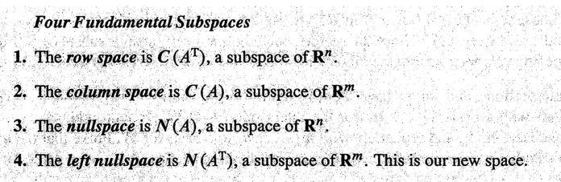
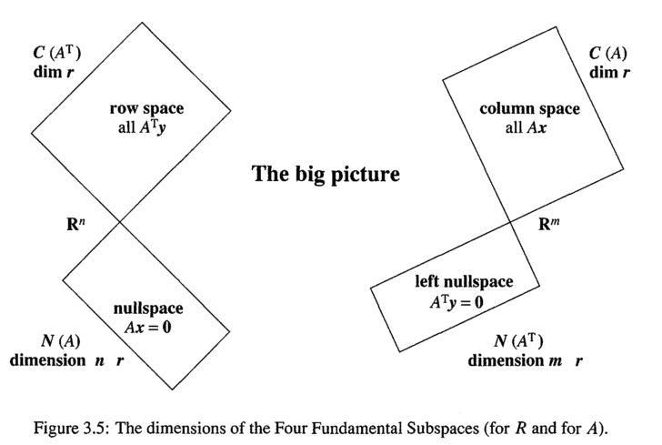
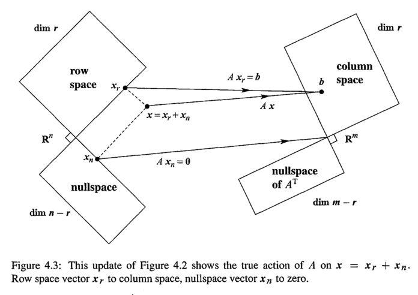
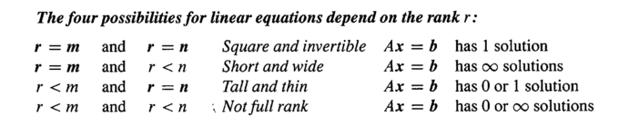

从sympy求最简形矩阵到矩阵的四个子空间及其联系¶
行最简的意义
利用初等行交换将矩阵化为行最简形矩阵，行最简形矩阵在求逆矩阵、求解矩阵方程、求解线性方程组、求矩阵与向量组的秩、求向量组的极大无关组、求矩阵的特征值与特征向量等方面具有关键作用。
1 2 3 4 5 6 7 | |
对任意一个矩阵\( A_{m\times n} \)来说（本文只考虑实矩阵）,均有四个空间与其对应，他们分别是列空间（column space）、行空间（row space）、零（核）空间（nullspace or kernel space）、左零空间（left nullspace）。熟悉这些空间的性质及其联系能帮助我们在脑海中建立一个舞台,线代中的一些重要内容便是在这个舞台上展开的，比如线性方程组（linear equation system）\( Ax=b \)解的情况、奇异值分解（SVD）的几何直观。

Part 1 Four Subspaces¶
考虑一个矩阵 \( A_{m\times n} \) ，不妨设其行阶梯形矩阵为\( R_{3\times 5}= \left[ \begin{matrix} 1&3&5&0&7\\ 0&0&0&1&2\\ 0&0&0&0&0 \end{matrix} \right] \) ， 其主元分别在在1, 4列两个位置。主元数目在取值上与矩阵的秩相等，所以 \( r=rank(A)=rank(R)=2 \)。
1.1列空间的维度与秩相等¶
列空间（column space）就是由矩阵的列向量组张成的空间。
此处为 和
张成的空间。那么
为什么不作为基向量呢？因为这三个向量可以由
，
线性表示，在三维空间中表现为与这两个基向量共面，用它们作为基的一部分不能扩展基向量组的表达能力，根据奥卡姆剃刀原理舍弃它们。
构成的无疑是一个3维空间中的（2维）平面，正好维度与rank(R)相等。观察我们选取的基向量
和
，他们是主元所在的列，也称为 pivot columns
1.2行空间的维度与秩相等¶
行空间（row space）就是由矩阵的行向量组张成的空间。
此处为 和
张成的空间，
为零向量，并不能作为空间的基向量（basis vector）。虽然行向量有5个元素，看似是在一个5维的空间中，但实际上因为我们的基向量只有两个，它们只能张成一个嵌套在5维空间中的2维子空间。我提供一个理解的思路，空间中任意向量由该空间基向量的线性组合表示，即
，这个式子意味着我们可以用 向量
来 唯一标识
,
只有两个元素，所以 实际上
。
再观察下我们选的基向量 和
实际上是主元所在的行，这样的行称为 pivot rows
1.3零空间的维度等于列数减去秩（n-r）¶
零空间（nullspace or kernel space）是 的全部解所构成的空间。
为了形象直观，我们先来讨论下 的解。
,第一列和第四列含有主元，为 pivot columns， 其对应的
和
称为 pivot variables。 其他三列不含主元，称为 free columns, 相应的
则称为 free variables，free variables可以自由取值，分别取三组值
，
，
，将三组值分别回代入方程，可解得相应的
。这样
的值就都知道了，我们可以写出方程
的解向量
,
,
，这三个向量被称为 special solutions。
容易验证， 的任意线性组合
也为
的解，这意味着以
为基的空间中任一向量
是
的解。这个以 special solutions为基的空间就是
的kernel space。
1.4左零空间的维度等于行数目减去秩（m-r）¶
左零空间 （left nullspace）是 的全部解所构成的空间。
零空间定义中是未知向量右乘 ，而这里是未知向量左乘 按照 1.3的方法进行讨论可得：
以 的m-r个 special solutions为基的空间就是 left nullspace。
上面的讨论是用A的行阶梯形矩阵R来作讨论的，一些人肯定会提出疑问？我们讨论的是R的四个子空间，这不代表A的四个子空间也具有相同的性质，其实可以证明A和R的子空间的维度是相同的。可参考 Introduction to linear algebra 4th edtion p186-p189, The Four Subspace for
Part 2 四个子空间的联系¶
 图1
2.1 四个子空间的正交性(orthogonality)¶
起初看到这张图时我并不是很理解，但从直观上可以看出它是想表达 ,
在我们证明它们之前，首先，我们得知道 向量垂直的定义:
若两向量内积为0，即 ，则称
.
将这个垂直（perpendicular）的概念从向量的层次扩展到空间的层次，给出以下定义：
定义一：Two subspaces
and
of a vector space are orthogonal if every vector
in
in
举个栗子，垂直于一张平铺的纸（2-D空间）作该平面的法线（一条线是一个1-D空间），这两个空间即是垂直的。
Theorem1:
Proof:
根据nullspace的定义，我们有
,
，即

根据rowspace的定义，我们有所以

即nullspace中任一向量与rowspace中任一向量垂直。
由定义一知:
上面证明了big picture中的左半部分，接着证明右半部分
Theorem2:
Proof:
根据left nullspace的定义，我们有
![\forall y\subset left\ nullspace,A^\top y=\left[\begin{matrix} column_1^\top \cdot y\\ \dots\\ column_n^\top \cdot y \end{matrix}\right]=\left[ \begin{matrix}0\\.\\0 \end{matrix}\right]](https://www.zhihu.com/equation?tex=%5Cforall+y%5Csubset+left%5C+nullspace%2CA%5E%5Ctop+y%3D%5Cleft%5B%5Cbegin%7Bmatrix%7D+column_1%5E%5Ctop+%5Ccdot+y%5C%5C+%5Cdots%5C%5C+column_n%5E%5Ctop+%5Ccdot+y+%5Cend%7Bmatrix%7D%5Cright%5D%3D%5Cleft%5B+%5Cbegin%7Bmatrix%7D0%5C%5C.%5C%5C0+%5Cend%7Bmatrix%7D%5Cright%5D)
即
根据column space的定义，我们有

所以
因此：
2.2正交补(orthogonal complement)¶
在Part 1中我们知道了四个子空间的维度，其中
不难发现，当 给定以后，
和
也就给定了，它们就成了常量(constant)
这两个式子也意味着
而 Part 2.1告诉我们 不妨视
为“空集”
,根据空间垂直的定义 应该 可用反证法证得
这样一来 借鉴集合论中关于绝对补集合的定义 ，我们这样 理解四个子空间的正交补性质
在 线性代数中，我们定义这样的成对空间互为正交补 。由正交补具有的特点可以 从另一角度 给出以下定义：
定义二：如果一个子空间
(发音为"V perp")
Theorem3:

Proof:
我们根据 定义二 来证明，那么待证命题转化为：
包含
中 所有 与
垂直的向量
用反证法来证明这个全称命题，假设
，即
是
的解
根据的定义(由
,与假设矛盾。
故中 不存在 与
垂直而不在
垂直的向量都在
类似地可以证明
Theorem4:
2.3  的几何意义¶
的几何意义¶
 图2
这个方程中，
是
维的，行空间也是 维的。
是
维的，列空间也是 维的。 所以这个方程可以解读为将
中的一个向量
映射到
中,同时注意到
由分别来自行空间和零空间的
和
构成，这两个空间是
的子空间。而
来自列空间（
的子空间）。我们在学习解方程
时总是分别求出一个 particular solution 和 special solutions,再将它们相加，这两个部分即
和
。
结合图2 思考 3.4节 （3.4The Complete Solution to Ax=b） 关于
图3
凡本网注明"来源：XXX "的文/图/视频等稿件，本网转载出于传递更多信息之目的，并不意味着赞同其观点或证实其内容的真实性。如涉及作品内容、版权和其它问题，请与本网联系，我们将在第一时间删除内容！
作者: 信息门下勃狗
来源： https://zhuanlan.zhihu.com/p/34056351